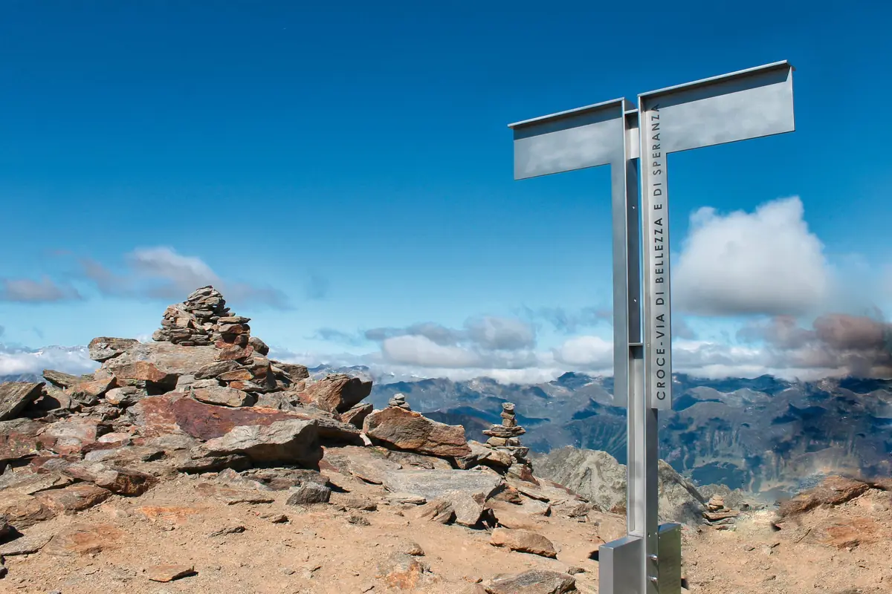

Pizzo Campo Tencia (3072 m) et Pizzo Croslina (3012 m)
La plus haute montagne entièrement tessinoise doit son nom à sa roche rougeâtre, riche en fer : « tencie », c’est-à-dire sale, en dialecte. Au centre du canton, elle offre une vue panoramique ; du sommet on peut descendre dans le Val Lavizzara ou rejoindre la Via Alta Vallemaggia. L’itinéraire est en grande partie balisé ; par endroits, attention aux chutes de pierres, surtout s’il y a d’autres personnes. En début d’été, il y a de la neige dans la cuvette sous la Bocchetta di Croslina. Du col (2864 m), on peut traverser vers le nord jusqu’à l’arête qui mène au Pizzo Croslina : passages exposés, prudence surtout à la descente.
- Longueur
- 3 km
- Montée
- +940 m
- Temps
- 3 h pour le Pizzo Campo Tencia, 4 h avec le Pizzo Croslina
- Difficulté
- T4+ Pizzo Campo Tencia, T6 avec le Pizzo Croslina
- Équipement
- Bonnes chaussures de montagne